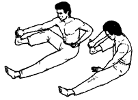

Змея сворачивает кольца

Исходное положение: Как в предыдущем упражнении. Правой рукой с внутренней стороны обхватываем подошву правой ноги, ногу приподнимаем так, что стопа смотрит вперед, голень параллельна полу, рука лежит на колене. Левая рука, согнутая в колене, оттянута назад, ладонь повернута вверх и лежит у основания бедра, пальцы слегка разведены.
Делая выдох, оттягиваем правой рукой ногу назад, колено максимально отводится за спину, при этом поворачиваемся верхней частью туловища вправо, а левую руку двигаем вперед и вправо, вращая предплечье вокруг оси по часовой стрелке. В конце движения отжимаем пальцы назад ладонью, словно отталкивая шар. При выполнении упражнения левая рука пересекает одноименное бедро по диагонали, все более прижимаясь к нему. На вдохе возвращаем руки и ногу в исходное положение.
Повторяем упражнение 7 раз.
Next up: Взмах хвостом змеи вбок